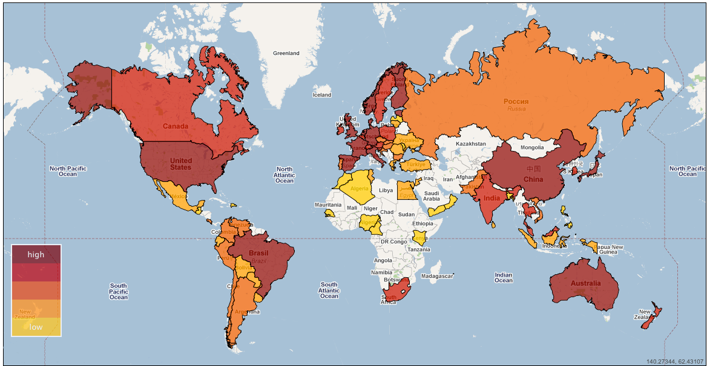

(read a Greek version of this post, as it was published on Linux Inside magazine, in pdf)
It's a well known fact that the rapid development of Free Software (and Open Source culture in general) all these years is a parallel process with internet development. If we try to map the contributors of a big project, we'll be certainly impressed by the geographical scatter. I remember using these kind of maps (like Fedora ambassadors or Gentoo developers) in Open Source presentations I did in the past in order to visualize this.

The reason I'm mentioning all these is to tell a true story, that would be impossible to take place without this "magic" ability of Open Source movement to bring people and communities together all over the world, beyond borders or other boundaries.
About a year ago I packaged for Fedora the iTALC software. iTALC (intelligently Teaching And Learning with Computer) is an application that can be very useful in school labs. It offers a teacher the ability to have a remote overview and control over student terminals. iTALC of course is Free Software, meaning that besides all the educational benefits, teachers and students can be sure that their content doesn't get monitored (since many proprietary solutions tend to route all traffic through their servers).
Following Fedora's packaging process, I opened a relevant bug and waited for someone to review it. Unfortunately the package didn't make it, mostly because it had some technical issues (iTALC bundles modified versions of libraries already packaged for Fedora, which goes against Fedora's policy), and because in the meantime I dealt with some other packages.
So it was a package that I have sort of abandon it. But about 3-4 months ago I got a personal email that was asking me if I had newer packages of iTALC because it's been used on schools in Peru! Following up the communication I realized that the man talking to me was the Educational Technologies General Director of Peru's Ministry of Education, where they've started using extensively Fedora on school computers and they needed iTALC so they can offer it as a software solution to the teachers.
The good thing was that at the meantime I had successfully passed through the mentorship process of Fedora and I was a Fedora Developer, having gained a bigger experience in packaging software. I also had a good knowledge on using Fedora's build servers, a fact that helped me build iTALC for all the necessary Fedora versions and archtectures that Peru's Ministry of Education was using. Long story short: I'm currently providing iTALC freely through a repository I maintain and the software is beeing used and tested on Peru's school labs.
About a year and a half ago, when I started the process for becoming a Fedora developer, my motive was to contribute back to a project that I daily use. I surely didn't expect that such a small contribution would make a difference to a country that far away from me.
This story could be yours. Don't hesitate to contribute in any way to your favourite Free Software projects. Even the smallest contribution can have a big impact on so many people. That's the beauty of Open Source, that's what motivates so many people worldwide to contribute, communicate, interact.
 diaspora*
diaspora*